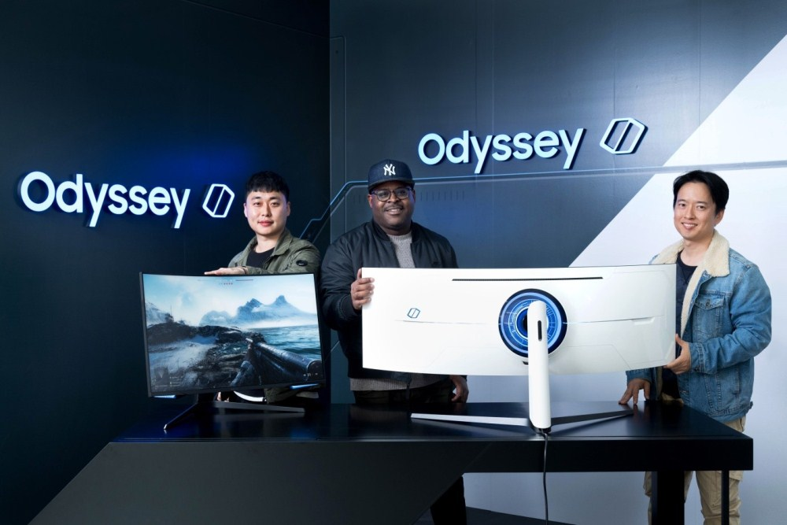

| Home | Sumsung Accessories | |
News & Reviews | Help |
Designing the Gaming Monitors of the Future: the Odyssey G7 and G9
|
|---|
| 2020 is set to be a big year for Samsung innovations. A year that will see the company chart a bold new future not just for technologies like AI, 5G and IoT, but everyday devices like gaming monitors as well. Since producing its very first gaming monitor less than four years ago, Samsung has soared to the top of the market with a portfolio of offerings that combine outstanding performance with immersive visuals.
Now, the company has announced that beginning this year, its Odyssey line of gaming laptops, PCs and VR devices is expanding to include gaming monitors, too. This will establish Odyssey as Samsung’s official product line for gaming gear. Visitors to Samsung’s CES 2020 booth can see firsthand how the company applied the futuristic design cues that the line is known for – and gamers love – to create the all-new Odyssey G7 and G9. Both the (27- or 32-inch) G7 and the (49-inch) G9 come packed with next-level specs including ultrawide, 1000R-curvature screens, a rapid 1ms response time, a 240Hz refresh rate for incredibly smooth FPS (first-person shooter) gameplay, G-Sync compatibility, and much more. To learn more about the process behind the gaming monitors’ designs, Samsung Newsroom interviewed some of the designers who brought the monitors to life. |
|  From left: Ki-hong Kim, Adam Burgess and Juwon Cho of Samsung Electronics’ Product Design Group, Visual Display Business |
A New Chapter for the OdysseyWhen discussing the process of refining the Odyssey G7 and G9’s designs, each member of the team, from Samsung’s Visual Display Business, stressed the importance of putting the needs and interests of gamers first. That, at its core, is what the Odyssey line is all about: equipping users with the tools they need to enjoy the best possible gaming experience. |

|
Getting the Most Out of Your MonitorIn addition to discussing the process of refining the Odyssey G7 and G9’s designs, the designers revealed how they would utilize the monitors to enhance their own gaming experiences. “Often times, when I play games, I play in a dark environment so I can immerse myself in the game and concentrate better,” said Kim. “The lighting on the front and back of the G7 was designed with consideration for such environments, and helps make the gaming experience that much more immersive.” Cho added that the Odyssey G9’s immersion-amplifying design has the power to transform how users experience their favorite games. “The G9’s 1000R curvature allows it to fill the user’s entire field of view,” said Cho. “When you play games that support the monitor’s 32:9 screen ratio, especially FPS, flight simulator and racing games, the level of immersion is such that you feel as if you are inside the game itself.” The market for gaming monitors is estimated to grow from roughly 7.8 million units in 2019 to 12.2 million by 2023.1 Going forward, Samsung will continue to lead innovation in the market by offering gamers monitor designs that put their needs first. |

|